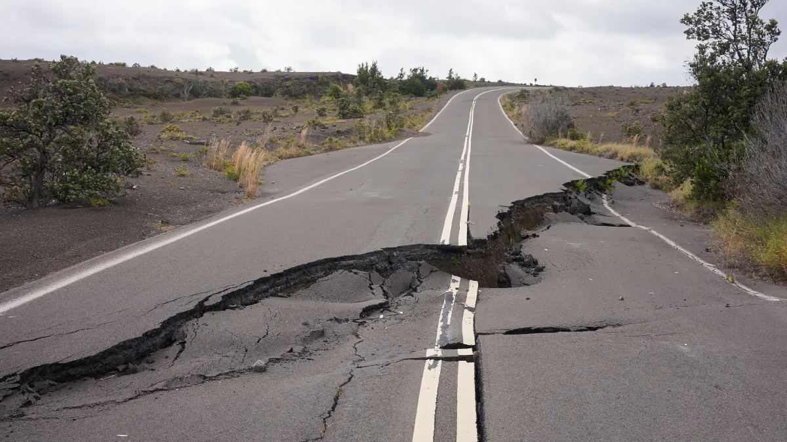
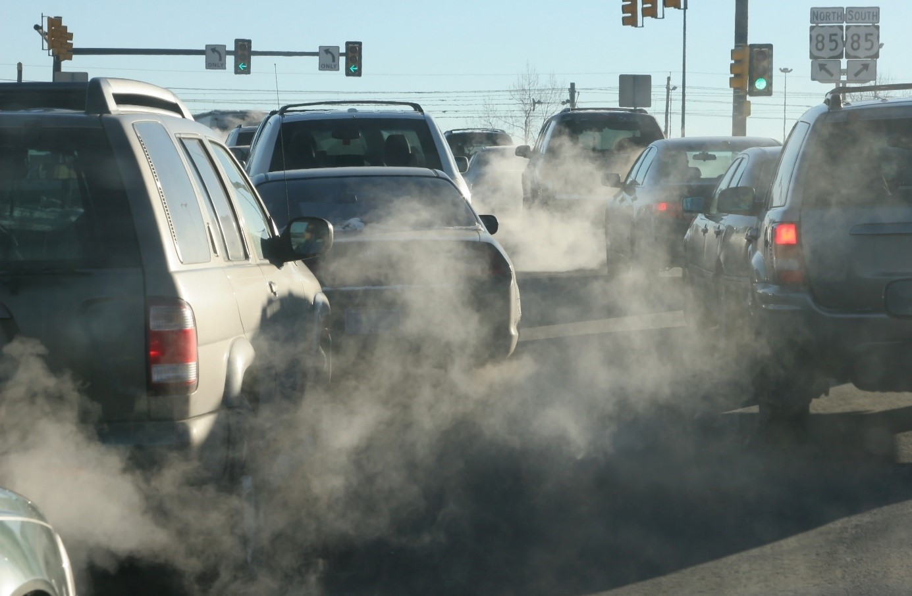
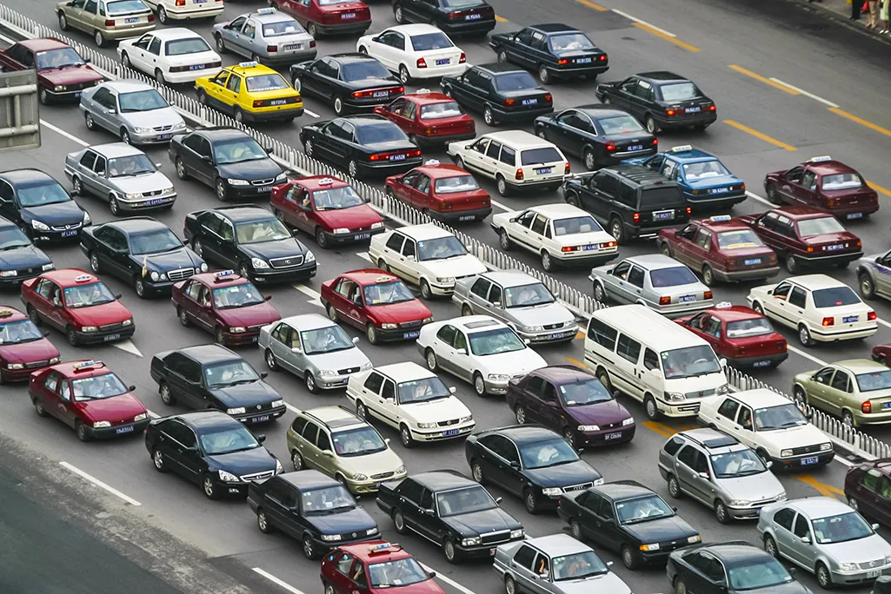
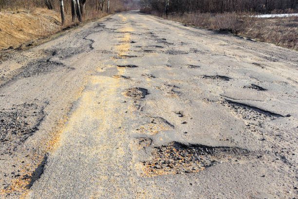

Main(Issue)
Many cities face transportation problems because too many people depend on private cars and motorbikes. This causes heavy traffic congestion, making roads crowded and less organized. Vehicles also release harmful gases that create air pollution and damage the environment. Noise pollution from busy roads affects people’s daily lives and creates unhealthy surroundings. In many places, walking and cycling paths are unsafe or limited, making eco-friendly travel difficult. People also lack awareness about the importance of public transport and electric vehicles. These problems can lead to unhealthy lifestyles, environmental damage, fuel waste, and less sustainable cities for future generations and local communities.

Air Pollution
Vehicle smoke and fuel emissions make the air dirty and unhealthy.

Traffic Congestion
Too many private vehicles cause heavy traffic jams and crowded roads.

Lack of Eco-Friendly Transport
Many people still do not use buses, bicycles, walking, or electric vehicles.

Unsafe Roads
Limited sidewalks and cycling paths make travelling unsafe for pedestrians and cyclists.

Air Pollution
Air pollution is caused by smoke and harmful gases released from cars and motorbikes. When too many vehicles are on the roads, the air becomes dirty and unhealthy for people and animals. Polluted air can cause breathing problems and damage the environment. Using eco-friendly transport can help reduce pollution and keep cities cleaner and healthier.
Traffic Congestion
Traffic congestion happens when there are too many vehicles on the roads at the same time. This creates long traffic jams, wastes time, and uses more fuel and energy. Crowded roads can also increase stress and make travelling difficult. Using public transport and walking can help reduce traffic problems.


Lack of Eco-Friendly Transport
Many people still depend on private cars and motorbikes instead of using buses, bicycles, walking, or electric vehicles. This increases pollution and traffic congestion. Some people may not understand the benefits of eco-friendly transport or may not have enough transport choices in their area.
Unsafe Roads
Some roads and pathways are not safe for pedestrians and cyclists. There may be limited sidewalks, no bicycle lanes, or damaged roads. This makes walking and cycling difficult and dangerous for people. Safer roads can encourage more people to use eco-friendly ways of travelling.

Smart Mobility FAQs
What is smart mobility?
Smart mobility means using safe, modern and eco-friendly transportation to make travel easier and reduce pollution.
Why is eco-friendly transport important?
Eco-friendly transport helps reduce air pollution, save energy and protect the environment for future generations.
What are examples of eco-friendly transportation?
Examples include bicycles, electric cars, public buses, walking, and carpooling.
How does smart mobility improve traffic flow?
Using public transport, cycling, and carpooling can reduce the number of cars on the road and decrease traffic jams.
How can students help promote smart mobility?
Students can walk, cycle, use public transport, and encourage others to choose environmentally friendly travel options.